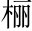

自西山道口徑北，逾黃茅嶺而下，有二道故寫二道。。其一西出，尋之無所得閣起一道。；其一少北而東，不過四十丈，土斷而川分，有積石橫當其垠銀。。其上為睥譬。睨詣。樑例。之形垠，崖也。睥睨，城上女垣也。樑，其旁出堡，屋棟也。山以小石城名者以此。塢堡。，有若門焉。窺之正黑烏上聲。，投以小石，洞然有水聲，其響之激越，良久乃已堡，小城也。塢，水障也。。環之可上，望甚遠此不是寫水。只極寫「窺之正黑」四字。，無土壤而生嘉樹美箭，益奇而堅，其疏數其旁可以窺深，其上可以望遠。偃仰，類智者所施設也促。。
噫！吾疑造物者之有無久矣宕筆。。及是，愈以為誠有疑其有。。又怪其不為之於中州，而列是夷狄，更千百年不得一售其伎，是固勞而無用。神者儻不宜如是，則其果無乎疑其無。？或曰：「以慰夫賢而辱於此者。」或曰：「其氣之靈，不為偉人，而獨為是物。故楚之南少人而多石借兩「或曰」，錯落自說胸中憤懣，隨筆蓬勃。。」是二者，餘未信之不說煞，妙。。
借石之瑰瑋以吐胸中之氣。柳州諸記，奇趣逸情，引人以深。而此篇議論，尤為崛出。